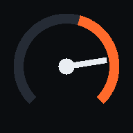

Engine SwapReloading stops the sound for a moment, so do it when parked. Otherwise it loads next time you open the app.
First drive
- 1Pair your phone with the car radioBluetooth → choose the Golf, use it for music/media.
- 2Test the soundPlays a short rev. Set the volume so it's clearly in the car speakers.
- 3Plug in the OBD adapter, ignition onClose the Ancel app first, then connect it here.
- 4Pick an engine and tune itPetrol or diesel, exhaust and turbo, from the Sound tab.
- 5Car test checklistDrive gently, then tick what works and send the report.
Anything odd in the car (silence, stutter, wrong revs)? More → Safe mode, and try again.
Demo pedal
Tap ☆ to make an engine a favourite: with two or more, ‹ › and the steering-wheel buttons switch between favourites only (petrol and diesel).
Tuning
Saved for each engine.
Shift light, blips & launch
Tone
Advanced
Car data source
Plug the adapter into the OBD port under the dashboard, switch the ignition on, then tap Connect OBD and choose it from the list.
Car test checklist
Parked tests first, then driving ones. Only touch the phone when stopped; a passenger can tick for you. Results go into Copy report for Claude.
Do it in this order: through the car speakers, Connect OBD, drive gently for 5 minutes without touching the phone, then tick below and Copy report (with the drive trace exported from Times & drive log). Anything odd: More → Safe mode.
Times & drive log
0–100 km/h starts by itself when you pull away from a stop; 60–120 km/h starts when you pass 60 accelerating. Timed from the car's OBD speed (interpolated between samples, about ±0.1–0.2 s). Only on a closed road or track.
This drive
Replay plays the recorded drive through the sound while parked: switch engines, tuning or Inside/Outside and hear them on your own drive. Export the file with your report so the sound can be tuned against it.
Advanced: sound delay
Bluetooth makes the sound reach the car speakers late (often 0.15–0.3 s). Measure it parked, with the phone playing through the car: tap Measure, then tap the big button each time you hear a click from the speakers (14 clicks).
Plays the rpm a little ahead along its trend, so revving sounds less late. Measuring sets it to about half the delay (at most 150 ms). 0 = off (as tested in the car). Always off in Safe mode.
Help
Safety: start the sound before you drive and leave the phone alone while moving. Keep the volume where you can still hear horns and sirens.
Quick start (2 minutes)
- Pair the phone with the Golf's radio for Bluetooth audio and set the radio's source to Bluetooth. Media volume up.
- Plug the adapter into the OBD port (under the dash on the driver's side), ignition on or engine running.
- Close the Ancel app (only one app can talk to the adapter at a time).
- Car tab → Connect OBD → pick the adapter from the list. The sound starts by itself once rpm arrives.
- Pick an engine (Sound tab, or ‹ › on the Drive screen). Drive gently first and set the volume.
No car nearby? Demo mode (Car tab) gives you a pedal and a simulated gearbox: N revs in place, D drives through the gears.
Ancel BD500 (private protocol)
The BD500 doesn't speak the usual ELM327 language. If Connect says "does not answer ELM327 commands", teach the app once:
- Record a Bluetooth log while Ancel's own app shows live RPM (steps in the capture guide).
- Here in More → Advanced: connection log & adapter settings → Load Bluetooth capture and pick the log or bug-report zip.
- The adapter profile fills in and is saved. Close the Ancel app, then Connect OBD as usual.
With the profile the app always gets rpm. It also tries speed, load, pedal, boost and coolant; the log says which ones the adapter gave ("Extra values from car: …"). If only rpm comes through, switch on the motion sensor option (Car tab) so the sound still knows when you accelerate.
What each feature does
What changed in each version: the changelog.
- Drive screen
- Big rev dial with the engine you hear, ‹ › to change engine, 🔧 Tuning (one tap to the mods of this engine, the current ones written under it) and ⇄ A/B (back to the engine you heard before). Below: throttle and boost bars, the car's live values, Start sound, volume, Pops, Inside/Outside, Record and My sounds.
- First drive card
- On the Drive screen until you have connected the car and ticked the car test checklist: pair the radio, test the sound, connect, pick an engine, then the checklist. Hide puts it away.
- Engines
- 38 engines on the Petrol and Diesel tabs (Sound tab), with the BMW engines (M50 to S58, B48 and the M57, N57 and B57 diesels) in their own group. Star (☆) your favourites: ‹ › and the steering-wheel buttons then cycle through those only.
- Tuning
- Per engine, saved for each: Exhaust stock, sport or straight pipe. Turbo on every engine: a factory turbo engine gets Small · quick (spools early, higher whistle), Stock or Big · laggy (later, louder, more whoosh and flutter); a naturally aspirated engine gets None (as built), Turbo kit (a turbo sized for that engine: whistle, whoosh and blow-off) or Big turbo (comes in later and louder). The line under it says at what rpm it reaches full boost. Boost on the Drive screen and the HUD follows the swapped engine's turbo. Hot cam (petrol): lumpy idle. Anti-lag (petrol with a turbo or kit): bangs on lift-off, turbo kept spooled. Reset brings back the engine as modelled.
- Tone
- Bass: more or less deep low end. Aggression: from smooth to raw and raspy. Turbo loudness: how loud the whistle, whoosh and flutter are. Louder with speed: turns the engine up as you go faster (the most at 130 km/h), so road noise doesn't drown it. Starter crank when the engine starts.
- Listening position
- Outside = the raw exhaust. Inside = muffled, as heard from the driver's seat, and at some rpm the cabin booms the way a real car's body does.
- Pops
- Crackle and afterfire on lift-off and on gear changes.
- Shift light, blips & launch
- (Sound tab) The shift light turns the rpm red (and the HUD LEDs) at that % of the swapped engine's range, with an optional beep and edge flash; the value also shows the matching rpm on your Golf's own rev counter. Rev-match blip: when the rpm jumps up off the throttle (a downshift), the engine blips. Launch control: stopped with the pedal floored, the engine holds that rpm on a crackling limiter until you pull away (needs speed from the car).
- My sounds
- Save the current engine, tuning and tone as a chip. Tap to load, hold to delete.
- Record
- Records up to 30 s of the sound and opens the share sheet.
- HUD
- Big speed, rpm, boost and LED shift bar. Mirror flips it so you can read it reflected in the windshield at night. Big buttons for A/B and Inside/Outside.
- 🌙 Dim
- Black screen with a faint rpm; tap to wake. The sound keeps running.
- Motion sensor, car-radio controls
- (Car tab) The motion sensor senses acceleration when the adapter only gives rpm. Car-radio controls play through a media element: steering-wheel play/pause mutes, next/previous change engine, keeps going with the screen off. Can add delay on some phones: switch off if it feels late.
- Car test checklist
- (Car tab) Parked, driving and after-drive tests to tick (works / problem + note / skip), with a Test sound button. The results go into the report.
- Times & drive log
- (Car tab) 0–100 starts when you pull away from a stop, 60–120 when you pass 60 accelerating. Uses the car's speed. Only on a closed road. The drive log keeps peaks and totals until you tap New drive, and exports to a spreadsheet file. The drive trace keeps the car's raw data of the last 20 minutes: Replay drive plays it back through the sound while parked (try other engines or tuning on your own drive; ½× / 2× and the bar under it change speed and position); export it after a drive so the sound can be tuned against it.
- Advanced
- Sound delay (Car tab): tap along to 14 clicks from the car speakers to measure how late Bluetooth makes the sound; Predict ahead then plays the rpm a little ahead (0 = off, always off in Safe mode). Rev range (Sound tab): your Golf's idle → redline is mapped onto the swapped engine's, so a diesel never sits on its limiter and a 9000 rpm engine still screams; pick petrol, TDI or a manual scale. Match a real recording (Sound tab): load a clip of the real engine (5–60 s, a video works) and the app adjusts that engine's tone towards it. Connection log & adapter settings (More tab): the log, the adapter's service ID and the learned BD500 profile.
- Safe mode, report, backup
- (More tab) Safe mode turns every extra off in one tap. Copy report for Claude copies what to paste in the chat after a drive. Export / Import moves all settings to another phone.
Troubleshooting
- No sound
- Is the button on the Drive screen showing ■ Stop sound? If not, tap Start sound. Check the phone's media volume, that the radio's source is Bluetooth and that the phone is connected for media (not only calls). Try the phone's own speaker: disconnect Bluetooth for a moment.
- Sound comes late
- Bluetooth audio itself adds about 0.15–0.3 s; the app can't remove that, but it predicts the rpm to hide part of it. Car tab → Advanced: sound delay measures it (tap along to clicks) and sets Predict ahead. Switch off Car-radio controls if it is on, keep the phone near the radio, and close other audio apps. The log line "Audio started (… output latency N ms)" shows the phone's part.
- Revs jump or the sound drops to idle
- The car's data is arriving unevenly. Copy report → Car data gaps tells which side: many gaps over 1 s point to the adapter or Bluetooth (keep the phone near the dashboard, close other Bluetooth and OBD apps, switch the ignition off and on), while Phone stalls point to the phone (close other apps; 🌙 Dim or the HUD draw the least). Gaps over 2.5 s make the sound fall to engine-off until data comes back.
- Won't connect
- Close the Ancel app (and any other OBD app), switch the ignition on, then Connect again. If the adapter isn't in the list, switch phone Bluetooth off and on. An empty list usually means Location is off (Android needs it to find Bluetooth devices) or Chrome lacks the Nearby devices permission: Android Settings → Apps → Chrome → Permissions. The Car tab tells you which when Connect fails. "Chrome cannot see a data channel": type the adapter's service ID (from nRF Connect) in the adapter settings below.
- Lost connection
- After one good connection the app keeps trying by itself (status shows Reconnecting…), for example after ignition off and on: every 4 s at first, every 15 s after 2 minutes, and it gives up after 30 minutes without the car. If it stays stuck, tap the connect button to disconnect, then connect again.
- Stops with the screen off
- Use 🌙 Dim instead of locking the phone, or switch on Car-radio controls. In Android settings, set Chrome's battery use to Unrestricted.
- Revs feel wrong
- Check Sound tab → Advanced → Rev range (petrol vs TDI). If the sound doesn't react to the pedal, the adapter may give rpm only: switch on the motion sensor option.
- Something misbehaves
- More → Safe mode turns every optional extra off with one tap (your settings are kept). If Safe mode fixes it, tell Claude which feature you were using.
- Something else
- Tap Copy report for Claude below and paste it in the chat together with what you did.
Safe mode
Feedback & backup
After a drive, tap this and paste it in the chat with what you heard. It starts with a one-line summary, then the app version, engine and settings, adapter type, audio delay, car-test results, any errors and the last 50 log lines. No location or personal data.
Saves engines, tuning, My sounds, match EQ, adapter profile, times and car-test results to one file, so they survive a new phone or a cleared browser.
Advanced: connection log & adapter settings
Pick the btsnoop_hci.log or the bug-report .zip recorded while the Ancel app showed live RPM. The profile below is filled in automatically.